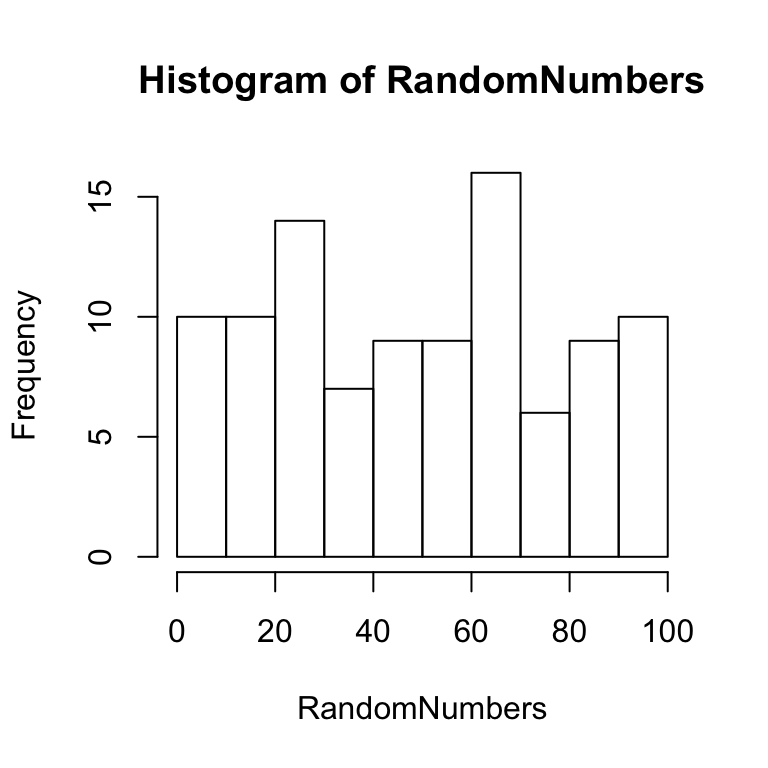

The simplest kind of experiment has one independent variable (single-factor) with two levels, and one dependent measure of interest. It is important to note that any experiment must have at least 2 levels. If you only measured the dependent variable in one condition, then you would simply be taking a measurement, and not conducting an experiment to see whether the measurement changes between different conditions. In order to find out if the measure changes across conditions, we need at more than one condition.
There are three general ways to manipulate an independent variable between two conditions: 1) present/absent, 2) differing magnitudes, and 3) qualitatively different conditions.
For example, consider a drug company researching a drug to reduce headache pain. They could run a present/absent experiment by having one group of participants receive the drug, and another group receive no drug, and then find out if headache pain was reduced for the group that received the drug. They could also run a magnitude experiment by having one group take one pill and the other group take two (or more) pills. This experiment could test whether taking 2 pills reduces headache pain more than taking 1 pill. Finally, they could run an experiment with qualitatively different conditions. For example, one group could take drug #1 and another group could take a different drug #2. This experiment could test whether one drug is better than another at reducing headache pain.
All experiments have the same basic empirical question: Did the dependent variable change between conditions of the independent variable? There are many other important questions, such as how much change happened, is the change meaningful, and did the independent variable really cause the change or did some other confounding variable cause the change?
At first blush, it is easy to find out if there was any change in the dependent measure. We simply look at the measurement in condition 1 and condition 2. If they are the same, then there was no change. If they are different, then there was a change.
However, in most psychology experiments the measurements in condition 1 and 2 will always be different. This is because most measurements in Psychology are variable. In other words, the measurements themselves change from one person to the next, or within the same person from one time to the next. Imagine measuring something in condition 1 twice. If you were measuring the length of a door twice, you would expect to get the same number twice (no change). However, if you were measuring how fast someone can say a word that begins with “a” twice, you would probably find two different reaction times.
So, there are two kinds of change that researchers have to deal with: real change caused by the independent variable, and random change caused by measuring the dependent variable. Any difference that is found in an experiment could be the result of one or both of these kinds of change. As a result, it is critically important to determine whether an observed change is real, or to due random chance. For example, if an observed difference was due to random change that occurs by chance, then we should not conclude that the independent variable caused the change. If a researcher did not recognize that their observed difference could have been caused by random change, then they might wrongly conclude that it is was their manipulation that caused the change; this kind of inferential error is called a type-I error. The opposite can happen as well. A researcher might find a difference, but conclude that the difference was caused by random change, even though in reality their manipulation caused the change. This kind of inferential error is called a type-II error.
In order to avoid making type I and II inferential errors, researchers need to determine whether the change they observe was real or random. Fortunately, this is a problem that can be solved with inferential statistics. We will go into more detail about how statistics are used to solve this problem. The solution usually does not involve eliminating the influence of random change, although this can be minimized by improving the quality of the measurement (by reducing measurement error and variability). In most cases, there will be always some random change that can not be eliminated. So, researchers are always faced with determining whether there was a real change above and beyond the change that occurs randomly.
The nice thing about random chance, is that it can be estimated very precisely. As a result, for a given experiment, we can determine both how much change can be produced by random chance, and we can determine how often (or how likely) chance alone would produce changes of different sizes. For example, we could show that in some experiment, chance often produces a change of say 10 (units of the measurement), but very rarely (say only 5 % or 1% of the time) produces a change of 20 units. If a researcher found a change of 20 units or greater, then they could be confident that chance did not produce this change, and they would then conclude that the independent variable caused the change. If a researcher found a change of 5 units, then they would recognize that chance alone could have easily produced this change, and they would not be confident that their independent variable caused the change.
In order to understand how to estimate the probability that chance caused a change between conditions, we first need to understand how it is that chance can produce changes in the first place.
Chance can produce changes in a measurement for two simple reasons: measurement variability, and sampling. Measurement variability refers change or instability in a measurement. Sampling refers to the process of taking measurements from a variable.
The easiest way to see how this works is by understanding the concept of sampling from a distribution.
Let’s imagine we will measure how long it takes to get from Brooklyn College to Times square. Google maps says this takes about 54 minutes. But, we all know that is an estimate that sometimes be off. Any given trip could be shorter or longer. As a result, if we measured how long several trips take for different people, we will find different times. So, the population of travel times has variability. We can easily describe these travel times with distributions. For example, consider the two distributions below.
Both distributions have peaks around 54 minutes, which is the average travel time between Brooklyn College and Times Square by subway. And, both distributions have some variability. Some travel times are shorter and some are longer than 54 minutes. The narrow distribution has less variability than the wide distribution. For example, the narrow distribution has a standard deviation of 2 minutes, and the wide distribution has a standard deviation of 20 minutes.
What does the variability mean for your travel time? If there is less variability, then more of your trips will be close to the mean of 54 minutes. And, when the trip is shorter or longer than 54 minutes, it won’t be too much shorter or longer, only a few minutes give or take. Notice, that certain travel times pretty much never happen in the narrow distribution. For example, it never takes 20 or a 100 minutes. When there is more variability, then more of your trips will be slower or faster than 54 minutes. For example, although the trips will average out to 54 minutes, many trips will be much shorter, and much longer than 54 minutes. For example, you could expect a trip of 75 minutes to happen fairly often. But, even when the distribution is wide, some very short or long trips still do not happen very often. For example, a trip of 300 minutes never happens according to the wide distribution.
Randomly sampling a number from a distribution is a lot like taking your chances on the subway. You might get to your destination in the average time, or you could have bad luck and get on the train when there are a lot of delays. We have a feeling for what the subway can do, it can sometimes be fast and sometimes be slow. Similarly, by looking at a distribution, we can get a feeling for what chance can do to the measurement.
Whenever we take a measurement, we can think of it as taking a random sample from a distribution. The distribution shows us that there are different probabilities of getting smaller or larger numbers. The mean is the most probable number, and in the distributions we are looking at, as the numbers get smaller or larger, they also get less and less likely. So, just by looking at the distribution, we can get a feeling for what chance can do. For example, random sampling from the narrow distribution will usually give numbers around 54, plus or minus 2 or 4ish. And, random sampling from the wide disribution will usually give us numbers around 54, plus or minus 20-40ish.
Let’s say you and your friend each take 10 subway trips between Brooklyn College and Times Square, and each time you use your cell phone to record how long each trip takes. This is the same as taking two samples of 10 scores from the travel time distribution. What happens we we do this? Will you and your friend have identical scores? Probably not. Each time, different random factors will cause each of the trips to take different amounts of time. We can plot the outcome of these hypothetical trips below in a histogram.

The histogram shows that in each sample, different trips took different amounts of time. These samples were created by randomly picking numbers from a normal distribution with mean = 54, and standard deviation = 20. So, we might expect that both of our samples with also have a mean of 54. But, as you can see this is not true. The black lines on each of the histograms show the mean travel times, and it is clear they are not exactly the same.
Let’s first look at the kind of differences that random sampling can produce in our subway example. Imagine, that 20 people each took 10 trips between Brooklyn College and Times Square, and all of them recorded their travel times. The data might look like this:
It easy to see that each person had different sets of travel times, and that the means (black bars) are also moving around. All of the means are close-ish to 54 minutes (which is the true mean), but some means are smaller and larger. These sample means are very important, and they point to another distribution, the sampling distribution of the mean.
The sampling distribution of the mean is a hypothetical idea. Imagine if instead of 20 people taking 10 trips, and infinite number of people each took 10 trips, and then recorded their travel times. Each of these samples would have it’s own mean. What does this distribution look like? We can use a computer to simulate this distribution below:
Remember each of the black lines in the sample histograms that represent the sample means? The above histogram shows means from 10,000 of those black lines (imagining we had 10,000 take trips).
We see that the distribution is centered on 54, which is the true mean of the population. We also see that some means get as small as around 35, and as large as 75. However, sample means hardly ever get smaller than 30, or larger than 80.
This graph is our window into the things that chance can do, and the differences that random sampling can produce just by taking measurements that have variability. What is most important, is that there are clearly hard limits on what chance can do in this situation. We already said, that chance alone hardly ever produces a mean larger than 75. We can use this kind of information when we observe means that occur outside of our chance window. For example, if one person had a sample mean of 5 minutes for taking 10 trips, what can we infer? Well, we can say that chance has an infintesimally small probability of producing this sample mean. For this reason,we can also confidently rule-out chance as an explanation. My guess is that person obviously DID NOT TAKE THE SUBWAY. Perhaps they flew in a helicopter.
It easy to rule out chance when the measurement produces sample mean that is well outside the chance window (like 5 minutes). It gets harder to confidently rule out chance when the sample mean is inside the chance window, but it can still be done. Researchers set their own criterions about this issue (e.g., alpha value). For example, if you found a sample mean of 70, what would you conclude? The histogram shows this sample mean occurs with a very low frequency, which means it does occur by chance. But, the chances are very low, less than 1%. So, if you are willing to accept those chances of being wrong, you might infer that a sample mean of 75 was not produced by chance, but perhaps produced by long delays on the subway.
The reason we are spending so much time on understanding chance, is that chance can produce differences between conditions in an experiment. This occurs for the same reason that chance can produce different sample means by random sampling alone. Remember in a simple experiment, we are taking samples of the dependent variable in two conditions. We want to know if there was a difference in the measure between conditions, so we often look at the difference in sample means between the conditions. And, as we have learned, those sample means can be different just because of random chance.
Fortunately, we can use methods called inferential statistics to estimate the kinds of differences that chance can produce. Then, we can estimate the likelihood that the differences we observe were produced by chance. When we find differences that are produced by chance, we can be more confident that our observed differences are real, and not random.